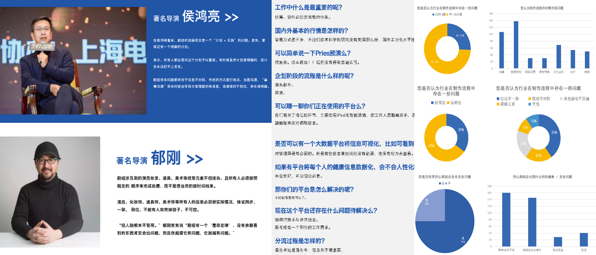
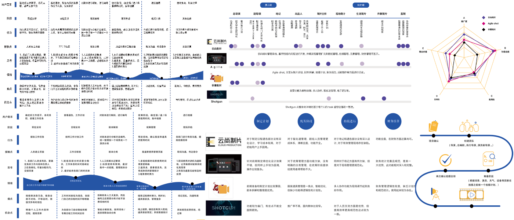
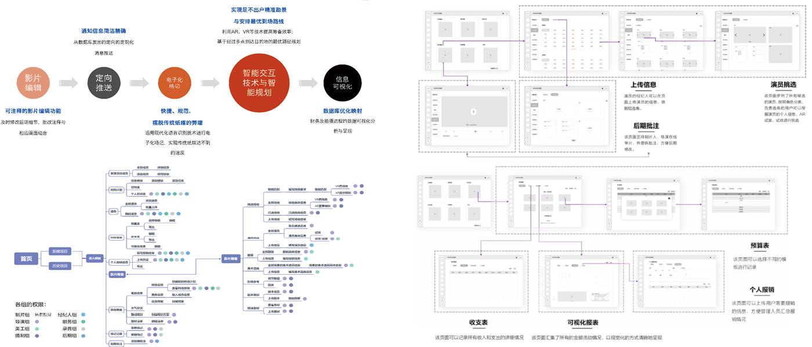

项目引入
行业背景
- 中国影视行业飞速发展，但管理模式没有跟进
- 剧组规模成扩大化趋势，分布在30～100人间
- 管理方式落后，剧组人员工作不规律，不固定
访谈调研
- 对深圳某中等规模剧组进行了跟组观察
- 对《罗曼蒂克消亡史》制片人开展深度访问
- 在北京各院校相关专业收回三百余份问卷
痛点陈述
- 剧组工作没有合理的工作计划，经常造成加班
- 人员间工作交流频繁，常发生信息缺漏或重复
- 财务计划不适应拍摄情况，且新计划更新延迟

详细分析
需求分析
- 需依据整体工作进度实时的产出合理工作安排
- 需对组内人员交流数据进行统一管理定向分发
- 需要实时录入财务报表并对财务状况实时统计
竞品分析
- 云尚制片：主要围绕剧组拍摄任务进行开发
- Agile：提供了智能剧本拆解及后期辅助功能
- shotgun：可对每个组员任务进行详细管理
机会分析
- 软件学习成本高，功能设计不适用于中小剧组
- 各软件有其专注的生产阶段，不涵盖制作过程
- 对财务状况的分析及反馈不足，可视化程度低

功能设计
公告智能分发
- 为各组开发专属的交流平台，通知统一收集
- 目标智能识别，提取关键词进行智能推送
财务报表录入
- 对财务报表格式进行约束后接受扫描报表
- 对报表数据智能提取，实时于数据大屏更新
后期在线审片
- 为后期制作人员和导演间开通审片快速通道
- 导演可以及时对关键帧进行标注，给予意见

项目总结
团队分工
- 与多专业团队完成项目调研以及需求分析
- 提供对应技术解决方案以及可行性分析
项目成果
- 产出完整需求分析以及项目设计文档
- 参与UXAD大赛并通过华南赛区区域复赛
个人收获
- 对交互设计过程中的各类文档规范深入了解
- 积累对陌生行业进行深度调研的宝贵方法论